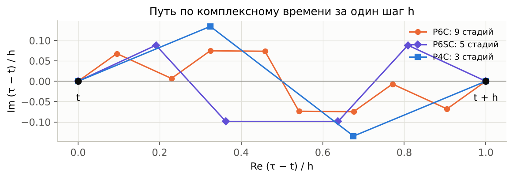
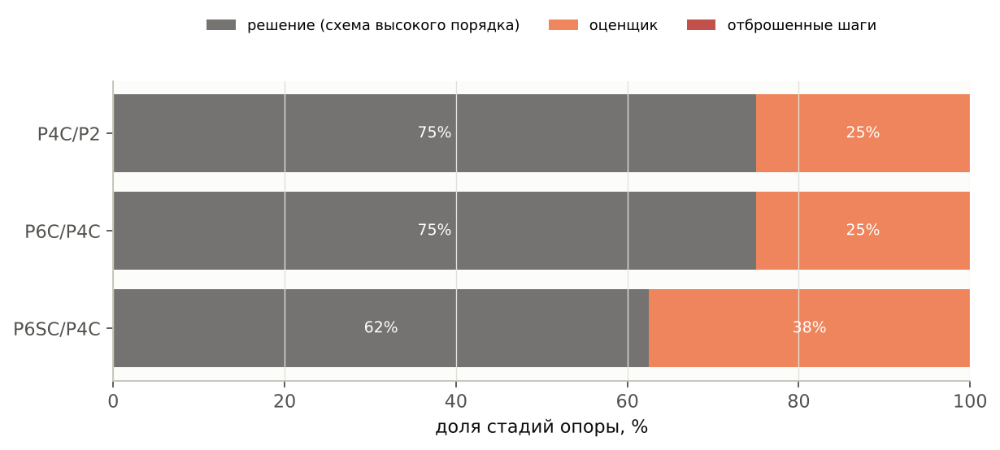
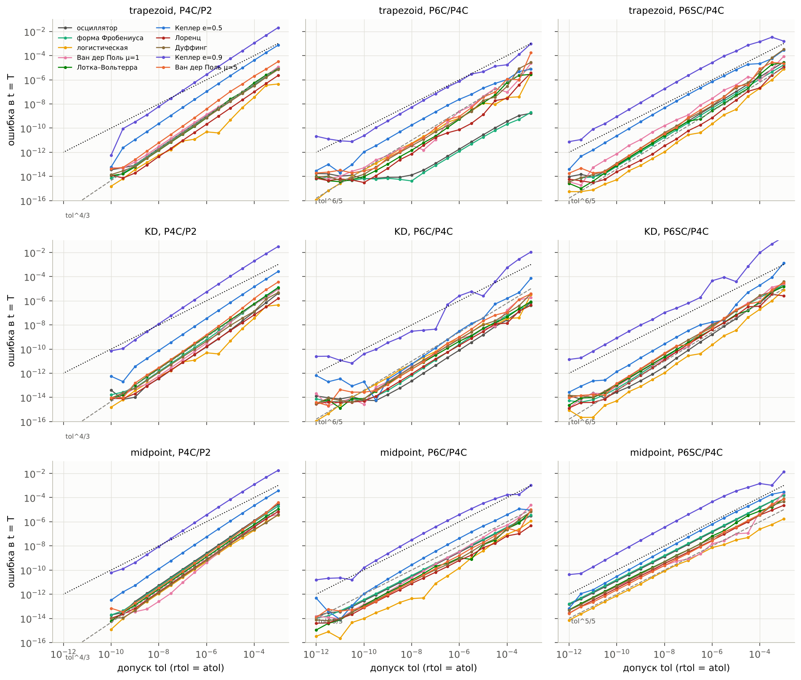
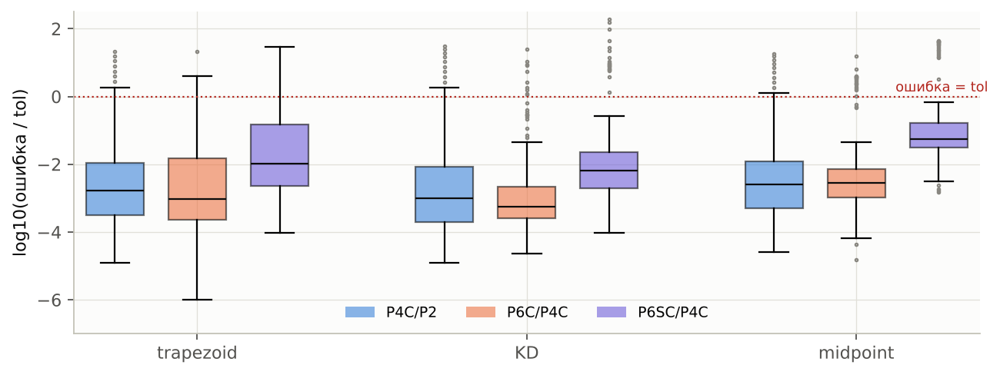
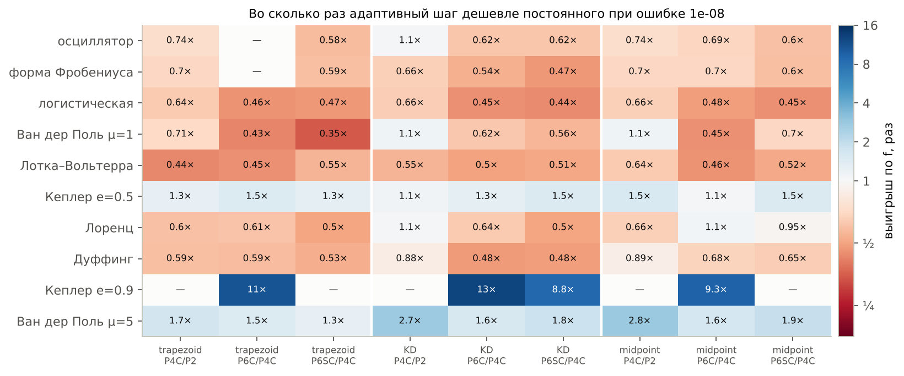
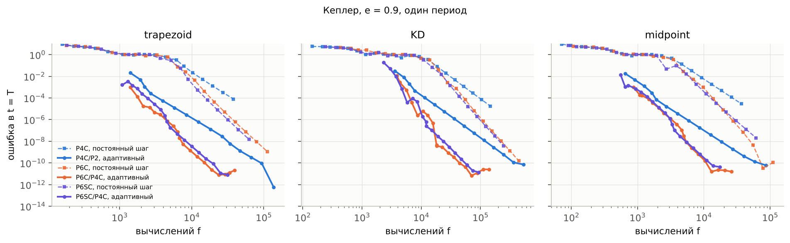
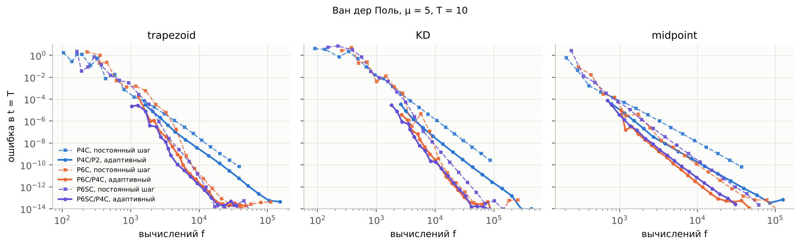
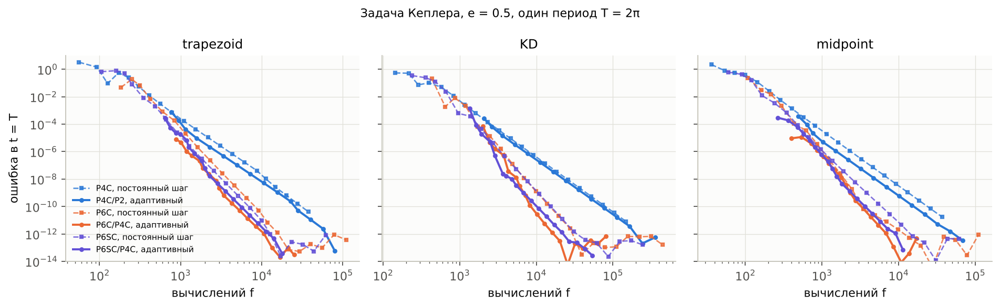
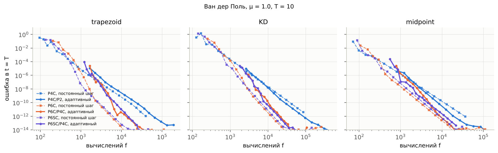
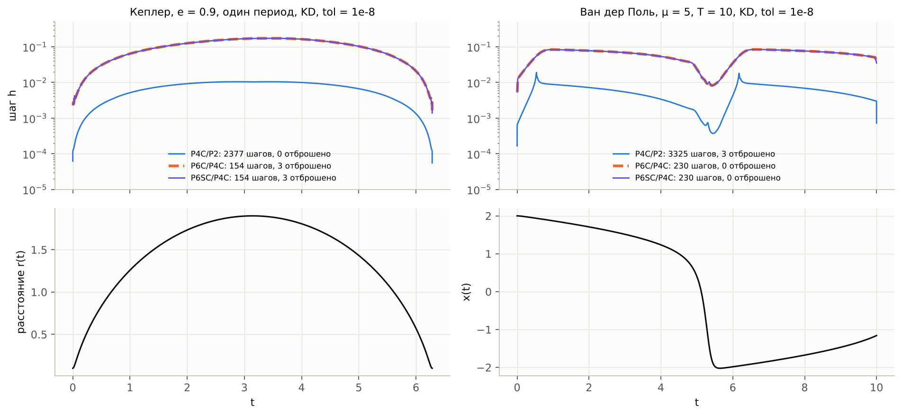

Адаптивный шаг для композиционных схем с комплексными коэффициентами
Оценка локальной ошибки по вложенной паре схем (P4C/P2, P6C/P4C, P6SC/P4C) на опорах трапеции, KD (s = 0.5) и средняя точка Грэгга. Дополнение к итоговому отчёту.
Дополнительный отчёт · 21 октября 2026
Код: composition_solver/csolver/adaptive.py · эксперимент: composition_solver/experiments/adaptive_step.py
Графики и данные отчёта: report/src/fig_adaptive.py → report/figs/adaptive/, report/data/adaptive_*.json
Коротко
Что сделано
В решатель добавлен адаптивный шаг. На каждом шаге из одной точки считаются схема высокого порядка p и схема низкого порядка q. Их разность служит оценкой локальной ошибки ~hq+1. Решение продолжается по схеме высокого порядка. Реализованы три пары: P4C/P2, P6C/P4C и P6SC/P4C.
Цена оценки
Общих стадий у схем пары нет: внутри P6C схема P4C идёт с дробными шагами, а оценщику нужен P4C с полным шагом h. Поэтому оценка не бесплатна. P4C/P2 и P6C/P4C тратят на неё 25 % всех стадий, P6SC/P4C тратит 38 %.
Допуск работает
На 8 основных задачах ошибка в t = T выходит ниже допуска в 1271 случае из 1272, а единственное превышение составляет 1.35×. Ошибка пропорциональна tol с наклоном 1.0–1.34, теоретический наклон равен p/(q+1). Регулятор консервативен: медиана ошибка/tol ≈ 10−3. Исключение составляет Кеплер с e = 0.9, где глобальная ошибка превышает tol в 3–30 раз.
Когда это выгодно
Адаптивный шаг выигрывает там, где масштаб решения сильно меняется: на Кеплере с e = 0.9 он в 9–13 раз дешевле постоянного при той же ошибке, на Ван дер Поле с μ = 5 в 1.3–2.8 раза, на Кеплере с e = 0.5 в 1.1–1.5 раза. На шести остальных гладких задачах постоянный шаг дешевле: адаптивный стоит 0.35–1.1 от него.
Содержание
Постановка: зачем адаптивный шаг и как оценивать ошибку
Вложенные пары и их стоимость
Контроль шага
Допуск и достигнутая ошибка
Стоимость: адаптивный шаг против постоянного
Траектории шага
Где адаптивность выигрывает и где нет
Ограничения, следующие шаги, воспроизведение
1. Постановка
Во всех экспериментах основного отчёта шаг был постоянным: h = T/N. Это удобно для измерения порядка, но на практике задают не N, а требуемую точность. Кроме того, у многих задач решение меняется неравномерно. На Кеплере с большим эксцентриситетом тело почти всё время медленно идёт по дальней части орбиты и лишь короткое время быстро проходит перицентр. Постоянный шаг приходится выбирать по самому трудному участку, и на остальной траектории он слишком мал.
Стандартный способ выбрать шаг — оценить локальную ошибку на каждом шаге и подстроить h так, чтобы она была близка к заданному допуску. Для методов Рунге–Кутты оценку дают вложенные пары (Дорманд–Принс 5(4) и т. п.): две формулы разного порядка на общих стадиях. Для композиционных схем естественный аналог — пара композиций одной и той же опоры:
y_high = Ψhigh_h(y) порядок p, y_low = Ψlow_h(y) порядок q < p,
err ≈ ‖y_high − y_low‖ ≈ C hq+1 (оценка локальной ошибки схемы низкого порядка).
Решение продолжается по y_high (локальная экстраполяция, как в DOPRI). Оценка относится к схеме порядка q, а фактическая ошибка шага имеет порядок p + 1, поэтому регулятор заведомо консервативен. Насколько сильно, видно в разделе 4.
from csolver import integrate_adaptive, BASE_METHODS, problems
p = problems.kepler(0.9)
r = integrate_adaptive(p, BASE_METHODS["KD"], "P6C/P4C", rtol=1e-8) # atol = rtol по умолчанию
print(r["y"], r["n_accepted"], r["n_rejected"], r["nf"]) # + история r["t"], r["h"], r["err"]
2. Вложенные пары и их стоимость
пара
стадий: решение + оценщик
порядок решения
порядок оценщика q
доля оценщика
P4C/P2
3 + 1
4
2 (сама опора)
25 %
P6C/P4C
9 + 3
6 (на midpoint 5)
4
25 %
P6SC/P4C
5 + 3
6 (на midpoint 5)
4
38 %
Пара названа «вложенной» по структуре: P6C — это тройной прыжок над P4C, P6Ch = P4Ca h ∘ P4Cb h ∘ P4Ca h с комплексными a, b. Но промежуточные точки P6C — это решения после P4C с шагами a h, (a + b) h, а не с шагом h. Поэтому ни одна стадия P6C не совпадает со стадиями P4Ch, и оценщик приходится считать отдельно. Рисунок 1 показывает это в плоскости комплексного времени: пути стадий трёх схем от t до t + h нигде не проходят через общие узлы, кроме концов.

Рис. 1. Узлы стадий t + (γ1 + … + γk) h для P4C, P6C и P6SC. Общие точки только t и t + h, поэтому общих вычислений нет.
Бесплатная оценка была бы возможна, если бы удалось построить композицию 4-го порядка из узлов P6C (как в парах Рунге–Кутты). Для композиций это означает решение условий порядка относительно весов при уже вычисленных состояниях, а состояния композиции нелинейны по шагу. Эту возможность мы не исследовали; она указана в разделе 8 как следующий шаг.

Рис. 2. Куда уходят стадии опоры при tol = 10−8 (медиана по 10 задачам и 3 опорам). Отброшенных шагов при таком допуске почти нет, всё дополнительное время уходит на оценщик.
3. Контроль шага
Норма ошибки — взвешенная RMS, как у Хайрера–Нёрсетта–Ваннера: err = ‖(y_high − y_low) / (atol + rtol·max(|yn|, |y_high|))‖RMS. Шаг принимается при err ≤ 1. Во всех экспериментах rtol = atol = tol.
Новый шаг: hnew = h · min(5, max(0.2, 0.9 · err−1/(q+1))). После отказа шаг на следующей попытке не увеличивается.
Начальный шаг выбирается по алгоритму HNW (II.4) для порядка q по f(t0, y0) и одному пробному шагу Эйлера.
Проекция Re. Обе схемы, как и в integrate, после шага проецируются на вещественную ось, и ошибка считается по вещественной части. Внутри шага стадии идут с комплексными γih и комплексным временем, поэтому требования к f те же, что в основном отчёте: нужно аналитическое продолжение.
Последний шаг обрезается так, чтобы точно попасть в t0 + T. Счётчик вызовов f включает оценщик, отброшенные шаги и выбор начального шага.
Почему регулятор не берёт порядок p. Оценка err ~ hq+1, поэтому показатель в формуле шага равен 1/(q+1), а не 1/(p+1). Если бы использовался 1/(p+1), шаг рос бы быстрее, чем падает оценка, и регулятор раскачивался бы. Глобальная ошибка при этом идёт как tolp/(q+1): для P4C/P2 это tol4/3, для P6C/P4C tol6/5. Это видно в разделе 4.
4. Допуск и достигнутая ошибка
Каждая из 10 задач (8 основных, Кеплер с e = 0.9 и Ван дер Поль с μ = 5) решалась с 3 опорами, 3 парами и tol от 10−3 до 10−12 с шагом 100.5. Для P4C/P2 допуск ограничен снизу 10−10, иначе требуются десятки тысяч шагов. Ошибка — относительная максимум-норма в t = T против точного решения или эталона DOP853.

Рис. 3. Глобальная ошибка в t = T против tol. Строки соответствуют опорам, столбцы парам. Точечная линия — ошибка = tol, штриховая — теоретический наклон tolp/(q+1). Внизу кривые упираются в округление (~10−14).
опора
пара
медиана наклона log err / log tol
медиана err/tol
max err/tol
отброшено шагов
trapezoid
P4C/P2
1.34
1.7e-03
20.9
3.0 %
trapezoid
P6C/P4C
1.16
9.4e-04
21.2
7.3 %
trapezoid
P6SC/P4C
1.22
1.0e-02
29.5
7.4 %
KD
P4C/P2
1.33
9.9e-04
30.7
2.4 %
KD
P6C/P4C
1.14
5.5e-04
24.8
7.1 %
KD
P6SC/P4C
1.19
6.7e-03
191.1
7.1 %
midpoint
P4C/P2
1.33
2.5e-03
17.9
3.1 %
midpoint
P6C/P4C
1.02
2.9e-03
15.5
7.2 %
midpoint
P6SC/P4C
1.00
5.5e-02
44.8
7.2 %
Все превышения tol (max err/tol > 1) приходятся на Кеплера с e = 0.9. На 8 основных задачах превышение одно на 1272 запуска: 1.35× (Кеплер e = 0.5, P6SC/P4C).

Рис. 4. Распределение log10(ошибка/tol) по всем задачам и допускам. Медиана лежит около −3: регулятор настроен на ошибку схемы низкого порядка, а решение идёт по схеме высокого. Точки выше нуля — это Кеплер с e = 0.9.
Что видно
Пропорциональность допуску выполняется. Наклоны 1.33 для P4C/P2 и 1.14–1.22 для P6C/P4C и P6SC/P4C на симметричных опорах близки к теоретическим 4/3 и 6/5. На средней точке Грэгга схемы 6-го порядка дают только 5-й (основной отчёт, вопрос 1), и наклон падает до 5/5 = 1.0, тоже в согласии с теорией.
Запас по точности большой: 2–3 порядка у P4C/P2 и P6C/P4C. У P6SC/P4C запас меньше (1–2 порядка), потому что у P6SC константа ошибки больше, чем у P6C, а шаги у них одинаковые (раздел 6).
Допуск задаёт локальную, а не глобальную ошибку. На Кеплере с e = 0.9 ошибки шагов у перицентра (r = 0.1, скорость ≈ 4.4) переходят в ошибку фазы, которая растёт до конца периода. Глобальная ошибка поэтому в 3–30 раз больше tol. Это типичное поведение решателей с локальным контролем ошибки. Для гарантии глобальной точности нужен либо меньший tol, либо оценка глобальной ошибки (раздел 8).
Отказов мало: 2–3 % у P4C/P2 и около 7 % у пар 6-го порядка. Судя по траекториям шага (раздел 6), они приходятся на разгон с начального шага и на резкие участки решения.
5. Стоимость: адаптивный шаг против постоянного
Сравнение честное: у адаптивного решателя в число вызовов f входят оценщик, отброшенные шаги и выбор начального шага. С ним сравнивается та же схема высокого порядка с постоянным шагом, N = 4 … 4096. Выигрыш — отношение nf(постоянный) / nf(адаптивный) при одинаковой ошибке, значения интерполируются по кривым ошибка–стоимость.

Рис. 5. Выигрыш адаптивного шага при ошибке 10−8 на всех 10 задачах (синий: адаптивный дешевле, красный: дороже). «—»: один из решателей не попадает в уровень 10−8. Так бывает, когда P6C с постоянным шагом на линейных задачах с трапециями сразу точнее 10−8, или когда постоянный шаг на Кеплере с e = 0.9 не доходит до 10−8 за 4096 шагов.

Рис. 6. Кеплер с e = 0.9: ошибка в зависимости от числа вызовов f. Штрих — постоянный шаг, сплошная — адаптивный. Выигрыш около порядка величины на всех опорах и парах.

Рис. 7. Ван дер Поль с μ = 5 (релаксационные колебания): выигрыш 1.3–2.8 раза.

Рис. 8. Кеплер с e = 0.5 (задача основного отчёта): выигрыш 1.1–1.5 раза.

Рис. 9. Ван дер Поль с μ = 1: решение гладкое, оптимальный шаг почти постоянен, и адаптивный шаг дороже (0.35–1.1 от постоянного).
задача
выигрыш при 10−8: min
медиана
max
Кеплер e = 0.9
8.8×
10.1×
12.7×
Ван дер Поль μ = 5
1.26×
1.66×
2.81×
Кеплер e = 0.5
1.06×
1.28×
1.52×
осциллятор
0.58×
0.66×
1.06×
Лоренц (T = 1)
0.50×
0.64×
1.08×
форма Фробениуса
0.47×
0.63×
0.70×
Ван дер Поль μ = 1
0.35×
0.62×
1.13×
Дуффинг
0.48×
0.59×
0.89×
Лотка–Вольтерра
0.44×
0.51×
0.64×
логистическая
0.44×
0.47×
0.66×
Минимум, медиана и максимум по 9 комбинациям (3 опоры × 3 пары). Полные таблицы на уровнях 10−4, 10−6, 10−8 и 10−10 лежат в report/data/adaptive_summary.json.
6. Траектории шага

Рис. 10. Сверху: принятые шаги h(t) для опоры KD при tol = 10−8. Снизу: решение. Слева Кеплер с e = 0.9 (расстояние до центра), справа Ван дер Поль с μ = 5 (координата x).
Кеплер, e = 0.9. У пар 6-го порядка шаг меняется примерно в 70 раз: от 2.5·10−3 у перицентра (r = 0.1) до 0.17 в апоцентре. У P4C/P2 диапазон ещё шире, около 170 раз. Постоянный шаг должен быть не больше перицентрического, отсюда выигрыш в 10 раз.
Ван дер Поль, μ = 5. Шаг падает на порядок на быстром переходе x: 1 → −2 (t ≈ 5.3) и на коротком начальном участке. Медленные участки занимают большую часть периода, но разница в шаге меньше, чем у Кеплера, и выигрыш около 1.5–3 раз.
P6C/P4C и P6SC/P4C идут одинаковыми шагами. Оценщик у них один и тот же (P4C), а err = y_high − y_low определяется в основном ошибкой P4C. Поэтому последовательности шагов практически совпадают: на рис. 10 штрих и сплошная линия лежат друг на друге. P6SC/P4C дешевле на шаг (8 стадий против 12), P6C/P4C точнее при тех же шагах.
7. Где адаптивность выигрывает и где нет
Выигрывает, когда характерный масштаб решения меняется по траектории в разы: орбиты с большим эксцентриситетом, релаксационные колебания, решения с быстрыми переходами. Чем шире диапазон «правильного» шага, тем больше выигрыш. Для Кеплера он растёт от 1.3× при e = 0.5 до 10× при e = 0.9.
Проигрывает на гладких задачах, где оптимальный шаг почти постоянен (осциллятор, логистическая, Лотка–Вольтерра, Дуффинг, Ван дер Поль с μ = 1, Лоренц на коротком отрезке). Там адаптивный шаг стоит в 1.5–2 раза дороже постоянного. Часть этого проигрыша объясняется устройством решателя: 25–38 % стадий уходит на оценщик, около 7 % шагов отбрасывается, и сначала шаг разгоняется от малого начального значения. Остаток, по-видимому, связан с тем, что регулятор выравнивает локальную ошибку P4C, а не ошибку решения. Вклады отдельно мы не измеряли.
Выбор пары. Если нужна гарантия точности, лучше P6C/P4C: у неё наибольший запас err/tol и порядок 6 на симметричных опорах. Если важнее цена, лучше P6SC/P4C: она примерно на треть дешевле на шаг, но запас по точности у неё меньше, а на Кеплере с e = 0.9 превышения tol у неё самые большие. P4C/P2 выгодна только при грубых допусках (10−3–10−5). При более жёстких допусках её порядок 4 проигрывает схемам 6-го порядка в разы (рис. 6–9).
Опора. Выводы одинаковы для всех трёх опор, потому что механизм контроля от опоры не зависит. На средней точке Грэгга схемы 6-го порядка дают порядок 5 (вопрос 1 основного отчёта), но контроль от этого не ломается: оценщик P4C по-прежнему имеет порядок 4, и наклон err(tol) = 1.0 соответствует теории. KD в пересчёте на f стоит дороже всех (покомпонентный проход, n вызовов f на стадию), но выигрыш адаптивности у него такой же.
Ответ на исходный вопрос («естественное продолжение — адаптивный шаг по вложенной паре»): да, пара P6C/P4C (или P6SC/P4C) работает как обычная вложенная пара. Допуск контролируется надёжно и даже с запасом. Без оценки глобальной ошибки исключение составляют задачи с сильным ростом ошибки по траектории. Платой за то, что общих стадий у схем нет, служат 25–38 % вычислений. Поэтому адаптивность окупается только на задачах с неоднородной динамикой.
8. Ограничения и следующие шаги
Бесплатный оценщик. Можно попробовать построить оценку из уже вычисленных узлов P6C, например линейную комбинацию промежуточных состояний, удовлетворяющую условиям порядка 4 по модели order_conditions.py. Это убрало бы 25 % накладных расходов и сдвинуло бы точку окупаемости.
Калибровка допуска. Регулятор систематически даёт ошибку примерно в 10−3 от tol. Можно ввести эмпирический множитель (оценивать ошибку как err·(h/href)p−q) или регулировать по оценке схемы высокого порядка через экстраполяцию Ричардсона (удвоение шага). Это дороже, зато точнее.
PI-регулятор (Густафссон) сгладил бы шаг на быстрых переходах Ван дер Поля и, скорее всего, уменьшил бы число отказов на 7 %.
Глобальная ошибка. На Кеплере с e = 0.9 локальный контроль недооценивает глобальную ошибку в 3–30 раз. Для гарантии глобальной точности нужна оценка глобальной ошибки, например сопряжённая задача или параллельный расчёт с tol/10.
Жёсткие задачи здесь не рассматривались, как и в основном отчёте. Для трапеций интересно проверить, не мешает ли потеря A-устойчивости у P4C и P6C (вопрос 3) регулятору на умеренно жёстких задачах.
Плотный вывод (интерполяция между шагами) не реализован, решение выдаётся только в узлах.
Воспроизведение
git clone https://github.com/Demonica22/methods.git && cd methods
pip install -r requirements.txt
python3 composition_solver/experiments/adaptive_step.py # эксперимент 3 -> composition_solver/results/ (~6 мин)
python3 report/src/fig_adaptive.py # графики этого отчёта (~2.5 мин на 4 ядрах)
node report/src/build_pdf_adaptive.js # -> report/adaptive_report.pdf (нужен playwright)
fig_adaptive.py кэширует расчёт в report/data/adaptive_sweep.json и adaptive_fixed.json. Чтобы пересчитать, удалите эти файлы.